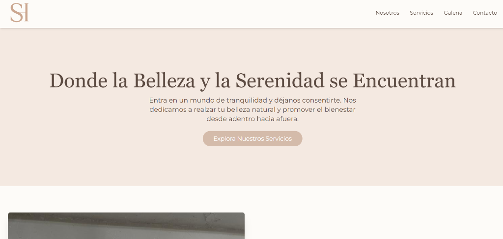
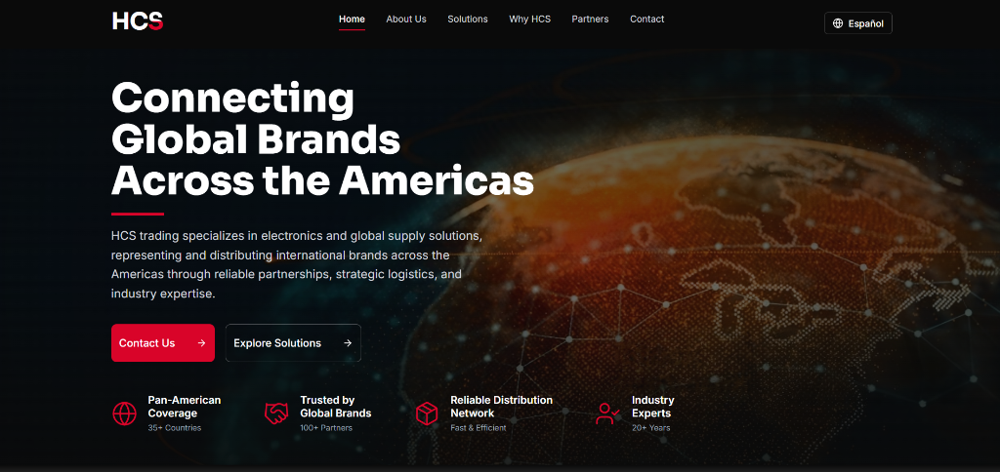
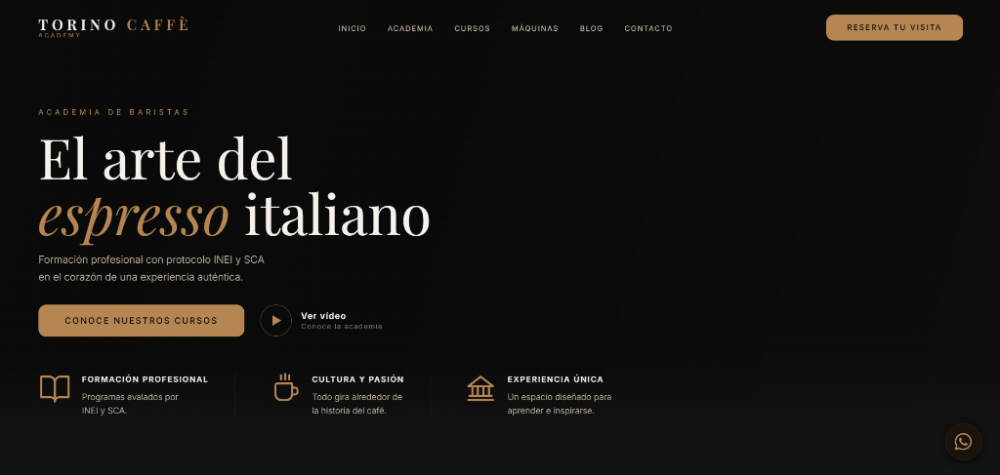
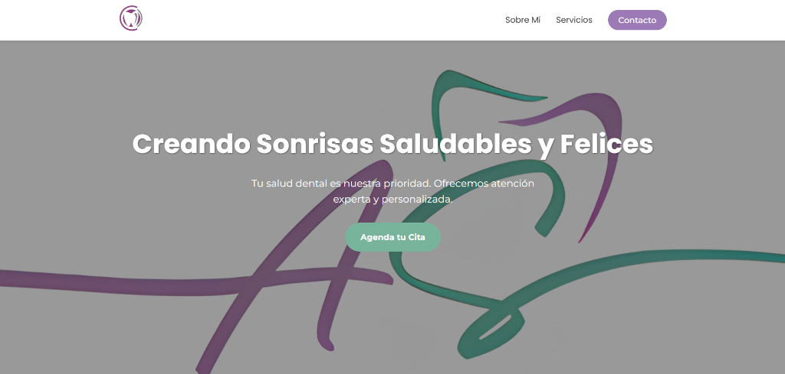
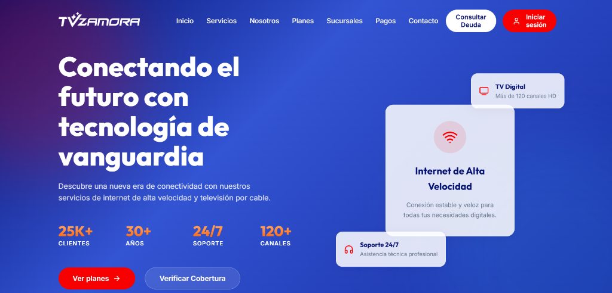
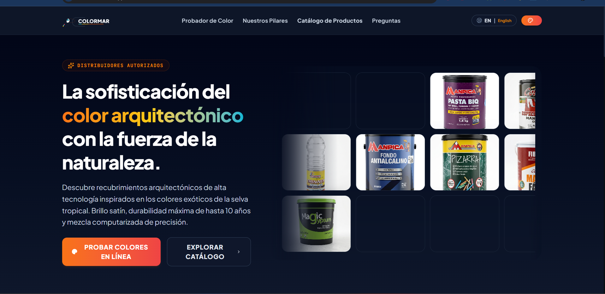

Desarrollador FullStack
Mauricio González.
Construyo aplicaciones web modernas, rápidas y escalables utilizando React, Tailwind CSS y Supabase. Apasionado del código limpio y la mejora continua.

Desarrollador FullStack
Construyo aplicaciones web modernas, rápidas y escalables utilizando React, Tailwind CSS y Supabase. Apasionado del código limpio y la mejora continua.
Portafolio

↗Con este proyecto consolidé landings beauty con jerarquía visual clara y responsive de marca. Hoy puedo entregar sitios estéticos, limpios y listos para comunicar una propuesta de valor.
Al construir esta landing de workshop aprendí a narrar una oferta, ordenar cronograma e incluir CTAs de reserva por WhatsApp. Ahora soy capaz de crear páginas de conversión para eventos y experiencias.

↗Con HCS aprendí a estructurar sitios corporativos B2B con claridad de servicios y tono profesional. Hoy puedo construir presencia web sólida para empresas con alcance internacional.

↗Este proyecto me enseñó a organizar contenido de academia y cursos con estructura clara y CTAs de reserva. Ahora puedo diseñar plataformas informativas orientadas a formación y captación de alumnos.

↗Al hacer OdontosG reforcé el diseño clínico limpio que transmite confianza y ordena servicios con claridad. Hoy puedo crear sitios para salud y clínicas con tono profesional y accesible.

↗Con TV Zamora aprendí a montar vitrinas de producto con navegación comercial e intuitiva. Ahora soy capaz de entregar tiendas y catálogos web claros para retail electrónico.

↗Colormar me llevó a construir UI interactiva con React: selector de color, calculadora y flujo de cotización. Hoy puedo crear herramientas web útiles que convierten visitas en leads por WhatsApp.
En GitHub mantengo práctica continua: retos, experimentos y código abierto. Ahí demuestro cómo aprendo, itero y amplío lo que ya sé construir.
Mi stack
Hablemos
Estoy abierto a nuevas oportunidades, proyectos freelance o simplemente hablar de desarrollo web. ¡Escríbeme!